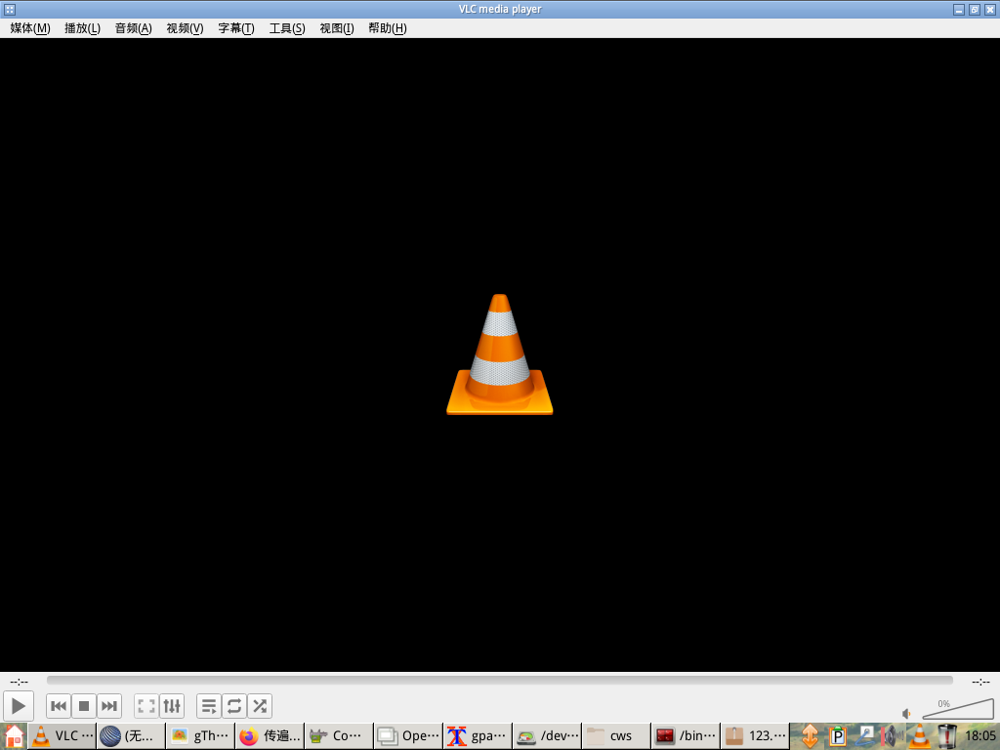
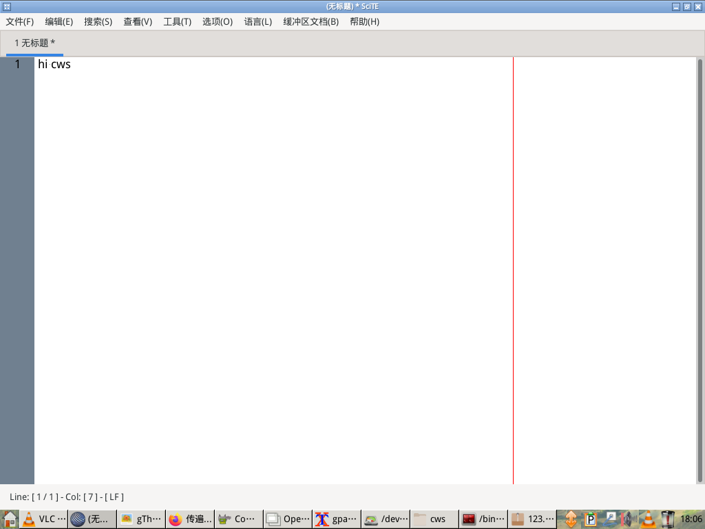
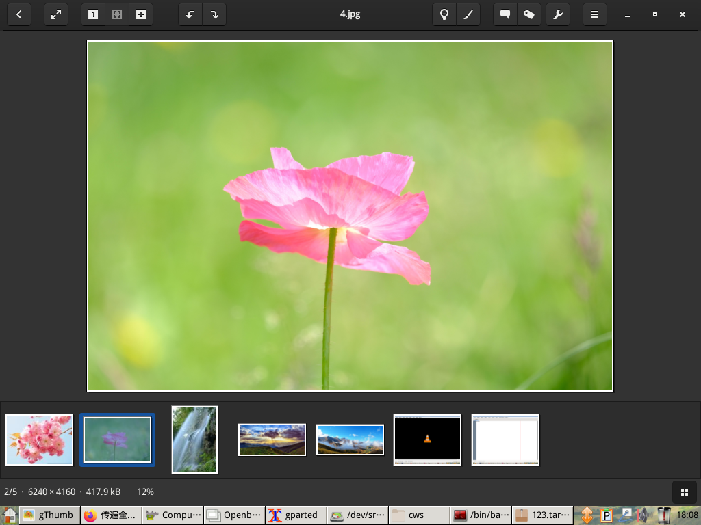
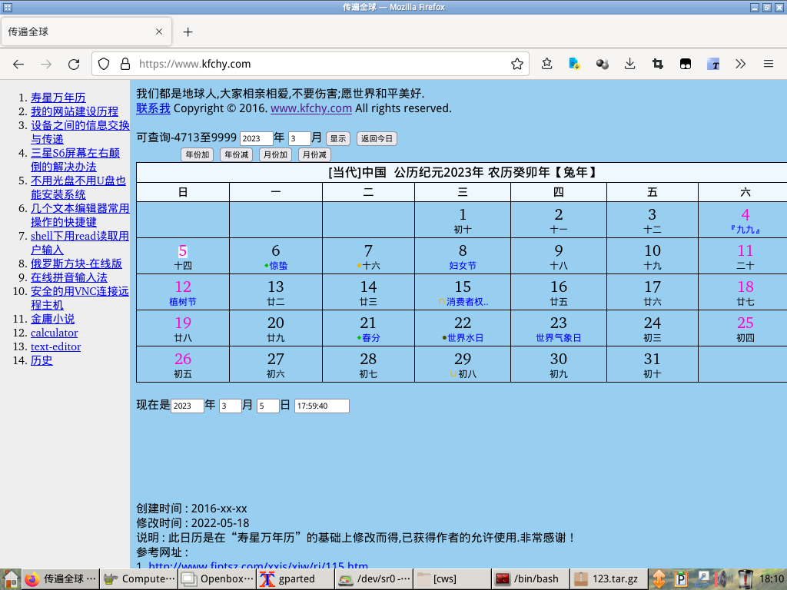
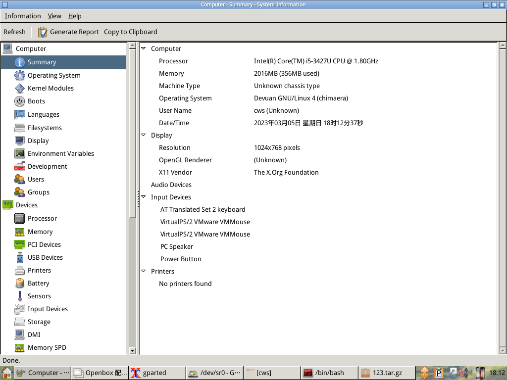
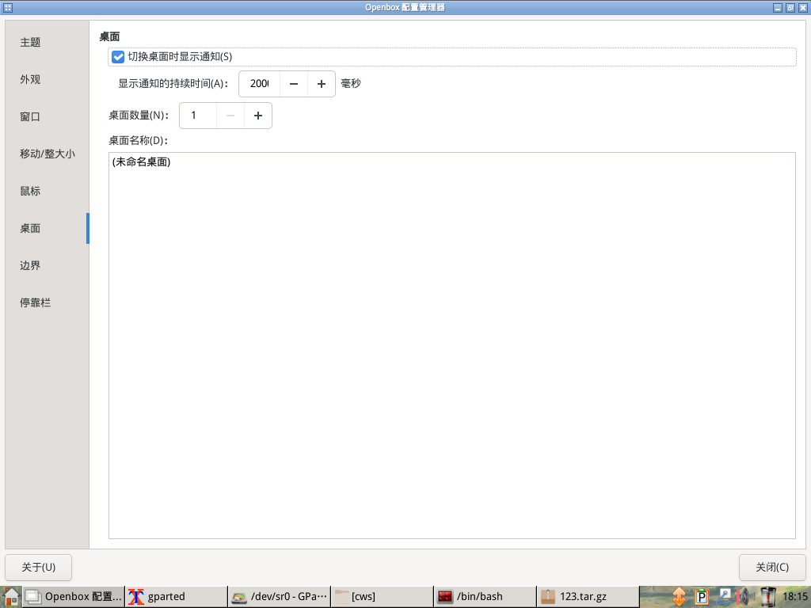
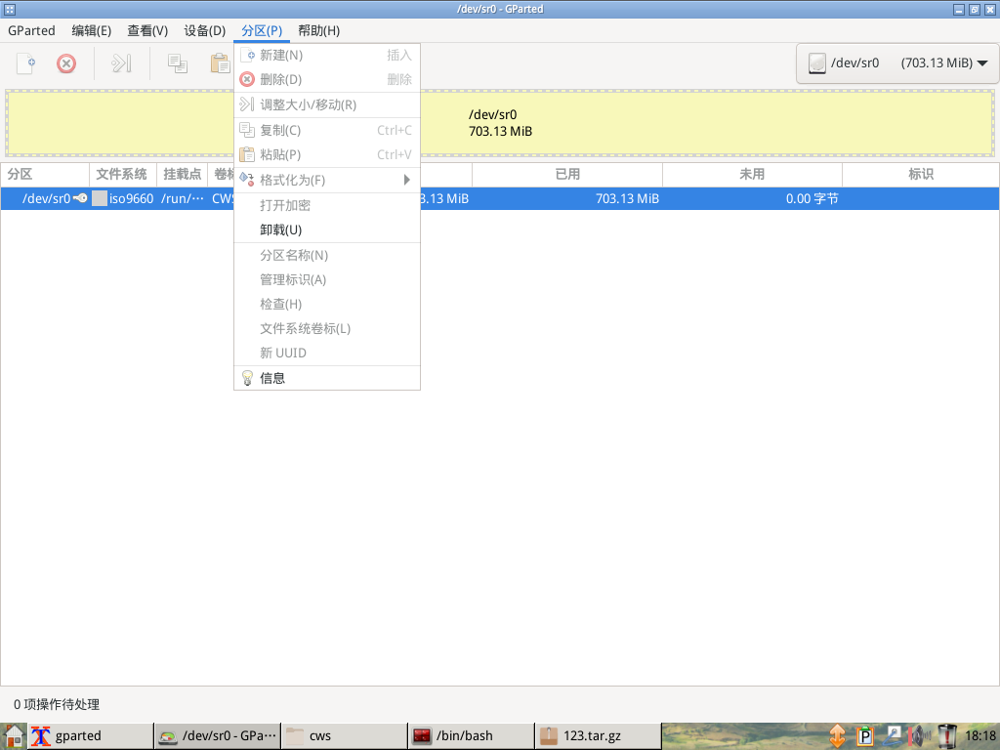
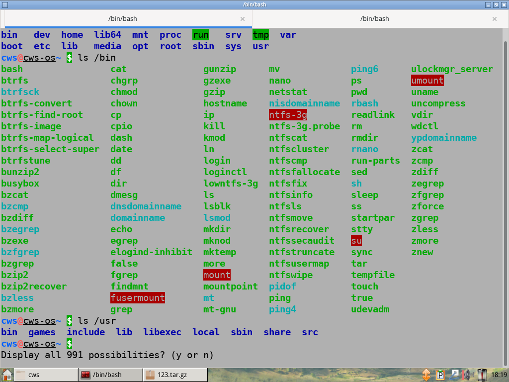
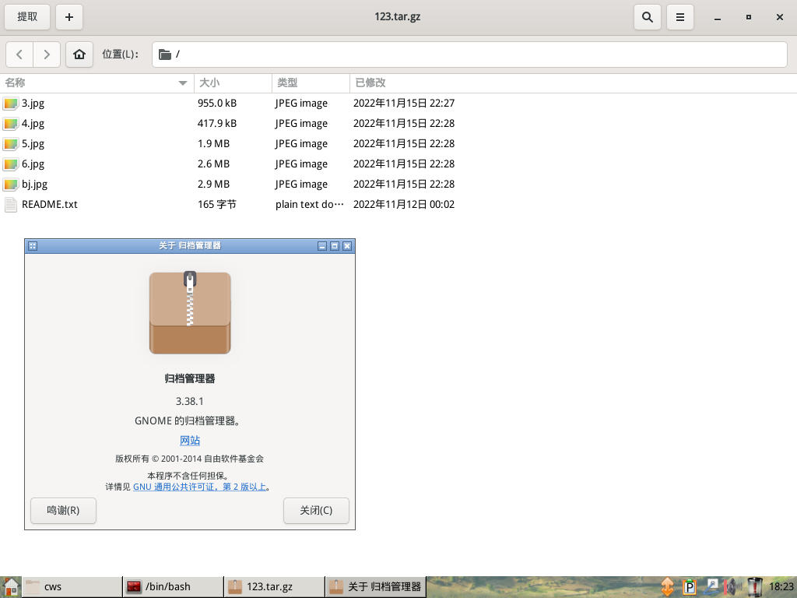
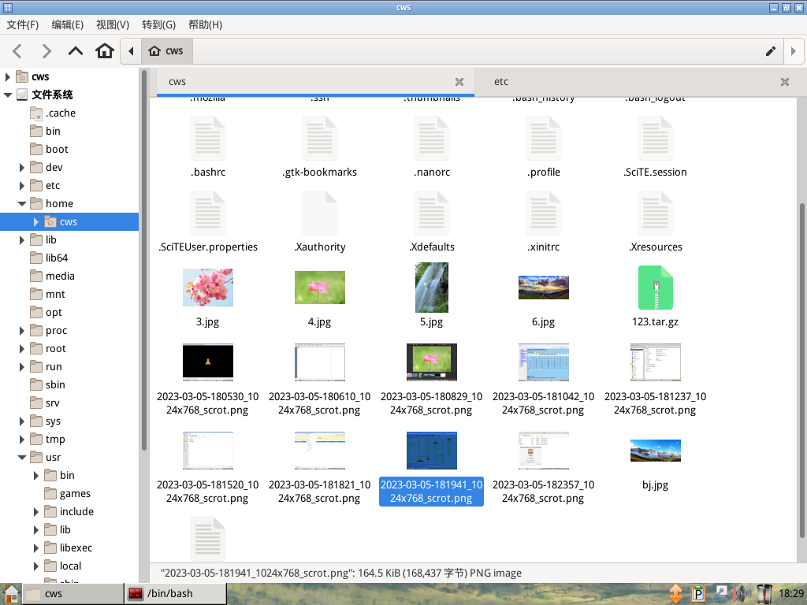

CwsDev-OS是一个好用易用的操作系统,它开源,安全,可自由使用,无需付费就可使用. 它由多个地球人的创作集结而成,这是一项伟大的工程. 下载地址: CWSDEVOS_X64_uefi_bios_USER_cws_PASSWD_qweasd_2023-03.iso sha512sum 桌面截图: 支持很多格式的音视频播放器--VLC  强大的文本编辑--Scite  支持很多格式的图片查看--Gthumb  火狐浏览器--Firefox-esr  查看电脑的相关信息--Hardinfo  Openbox的设置页面  分区管理--Gparted  终端终结者--Terminator  压缩解压--file-roller  多标签,容易定制右键菜单的文件管理--Thunar  创建时间 : 2023-03-05 修改时间 : 2023-03-05 说明 : No 参考网址 :